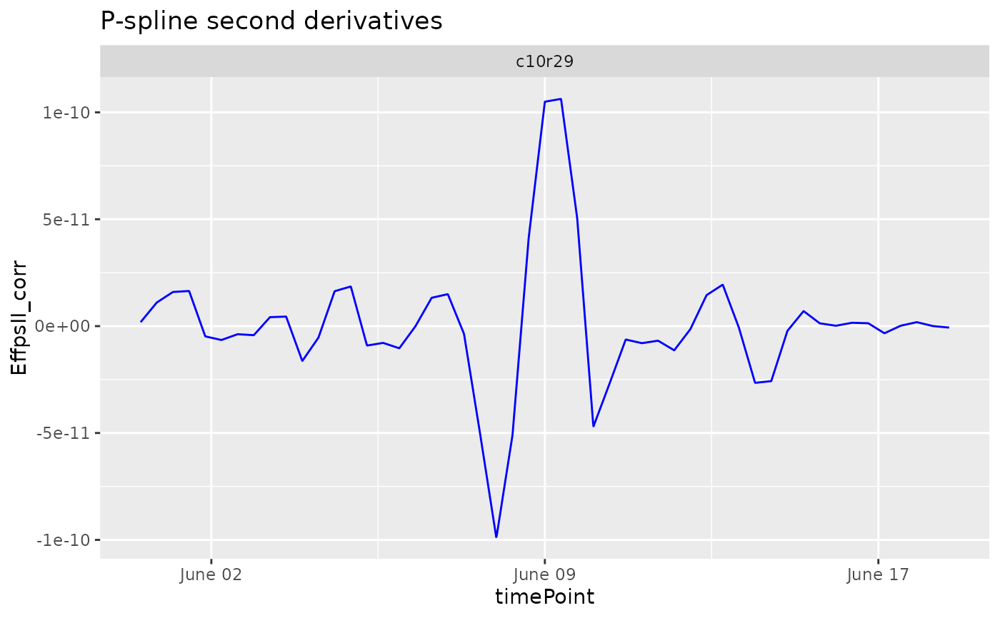
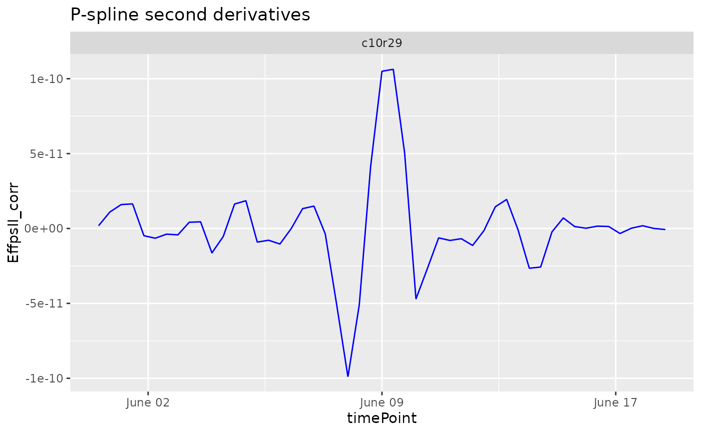

Plot the results of a fitted spline.
Arguments
- x
An object of class
HTPSpline.- ...
Ignored.
- plotType
A character string indicating which spline component should be plotted, either predictions, derivatives or second derivatives ("derivatives2").
- genotypes
A character vector indicating the genotypes for which spline components should be plotted.
- plotIds
A character vector indicating the plotIds for which spline components should be plotted.
- title
A character string used as title for the plot. If
NULLa default title is added to the plot depending onplotType.- output
Should the plot be output to the current device? If
FALSEonly a (list of) ggplot object(s) is invisibly returned. Ignored ifoutFileis specified.- outFile
A character string indicating the .pdf file to which the plots should be written. If
NULL, no file is written.- outFileOpts
A named list of extra options for the pdf outfile, e.g. width and height. See
pdffor all possible options.
See also
Other functions for fitting splines:
fitSpline()
Examples
## The data from the Phenovator platform have been corrected for spatial
## trends and outliers for single observations have been removed.
## Fit P-Splines on a subset of genotypes
subGeno <- c("G070", "G160")
fit.spline <- fitSpline(inDat = spatCorrectedVator,
trait = "EffpsII_corr",
genotypes = subGeno,
knots = 50)
## Visualize the P-Spline predictions for one genotype.
plot(fit.spline, genotypes = "G160")
## Visualize the first and second derivatives of the predictions for one plant.
plot(fit.spline, plotIds = "c10r29", plotType = "derivatives")
 plot(fit.spline, plotIds = "c10r29", plotType = "derivatives2")

plot(fit.spline, plotIds = "c10r29", plotType = "derivatives2")
